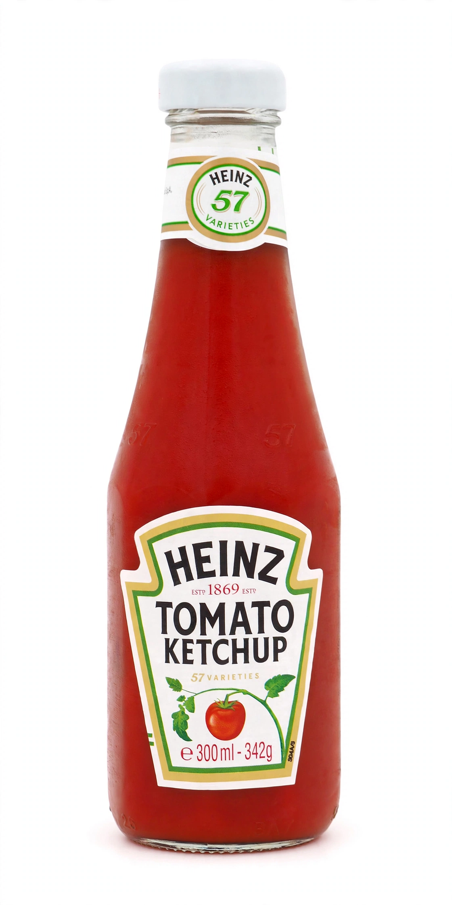

| H. J. Heinz Company | |
|---|---|
 The iconic keystone label and "57 Varieties" slogan | |
| Founded | 1869, Sharpsburg, Pennsylvania, U.S. |
| Founder | Henry J. Heinz |
| Headquarters | Pittsburgh, Pennsylvania, U.S. |
| Products | Ketchup, baked beans, soups, sauces, pickles |
| Parent | Kraft Heinz (since 2015 merger) |
| Famous for | Heinz Tomato Ketchup; pickles; "57 Varieties" |
The H. J. Heinz Company is an American food processing company headquartered in Pittsburgh, Pennsylvania. Founded by Henry J. Heinz in 1869, it grew from a small business selling grated horseradish in clear glass bottles into one of the world's largest food companies, best known for its tomato ketchup and its "57 Varieties" slogan. In 2015, Heinz merged with Kraft Foods to form the Kraft Heinz Company.
Heinz began in 1869 selling horseradish from a garden in Sharpsburg, Pennsylvania; after an early bankruptcy he relaunched with his brother and cousin as F. & J. Heinz in 1876, the year the company introduced its tomato ketchup. Heinz pioneered quality control, food-safety lobbying (supporting the 1906 Pure Food and Drug Act), sanitary factories, and flamboyant marketing, including a 40-foot electric sign in New York and a pickle-shaped pin that became one of the most famous advertising giveaways in history.
The slogan, adopted in 1896, was chosen because Heinz liked the sound of the number — the company already made far more than 57 products. It remains on the ketchup bottle's neckband, and folklore long held that tapping the embossed "57" on the bottle's neck was the fastest way to make the thick ketchup pour.
Heinz Tomato Ketchup, sold in more than 140 countries, is the company's flagship; in the United Kingdom, Heinz Beanz and cream of tomato soup are supermarket staples. The firm also built its name on vinegar, baked beans, and pickled products such as the pickled cucumber, as well as condiments ranging from salad cream to fiery sauces competing with the likes of harissa.